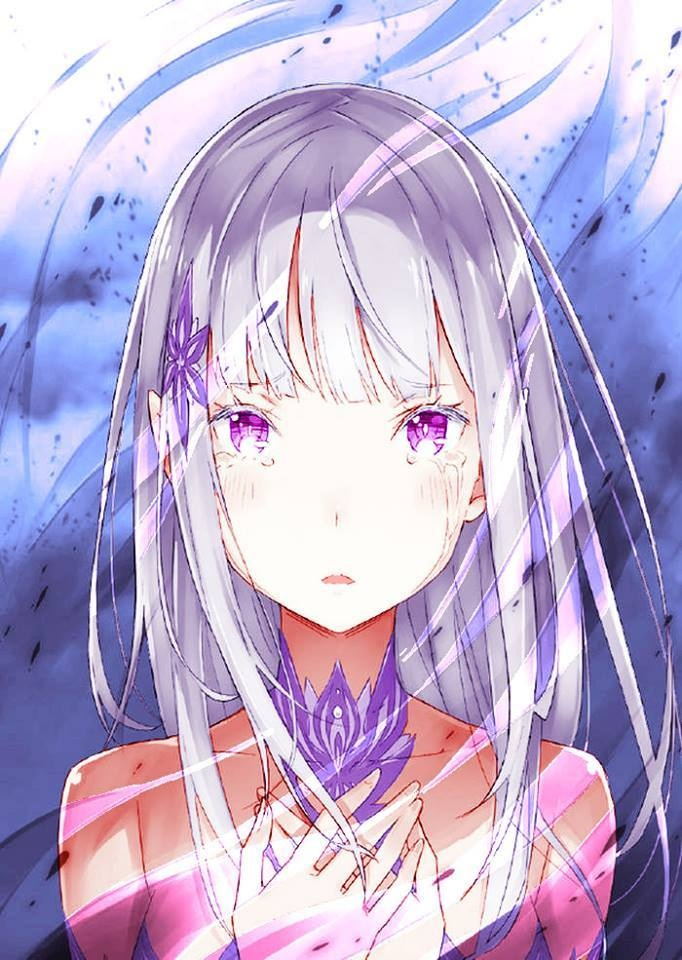
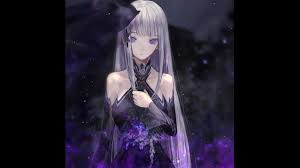
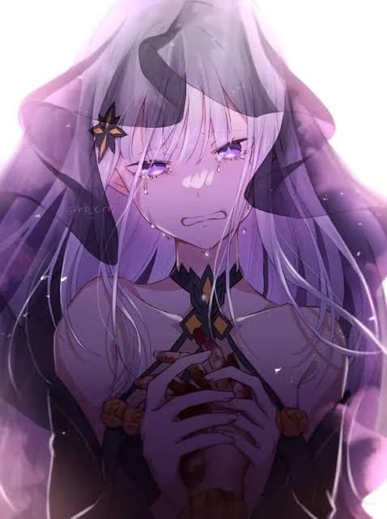

Re:zero
Seja bem vindo, otaku!
Satella a melhor bruxa do anime

Satella é a bruxa da inveja no anime, mas tem algumas coisas que não são tão conhecidas por quem não participa da comunidade Re:zero.
Curiosidades sobre ela:
Satella é chamada de bruxa da inveja, porém a bruxa da inveja é a sua outra personalidade que foi gerada após ela absorver o fator da bruxa e, por não ser compatível, acabou enlouquecendo e criando a personalidade da inveja.

A Autoridade da Inveja de Satella, é baseada na manipulação do tempo, espaço e sombras. Suas capacidades exatas incluem:
Retorno pela Morte: É a habilidade central que ela concede a Subaru, permitindo que ele volte no tempo para um "ponto de salvamento" após morrer.
Manipulação Espacial: Satella pode distorcer o espaço, o que lhe permite congelar ou alterar o fluxo temporal, além de criar barreiras.
Tentáculos de Sombra: Ela manifesta mãos e garras de escuridão pura capazes de dizimar inimigos e imergir áreas inteiras nas sombras.Devido à sua imortalidade, ela é considerada tão poderosa que não pôde ser morta, sendo necessário um selamento realizado em conjunto pelo Dragão Volcanica, pelo Sábio Flugel e pelo primeiro Mestre Espadachim, Reid Astrea.
Mas por que ela é apaixonada no Subaru?
Satella é apaixonada nele porque, segundo ela, ele a salvou, deu-lhe luz, segurou sua mão na solidão e a beijou no passado.

